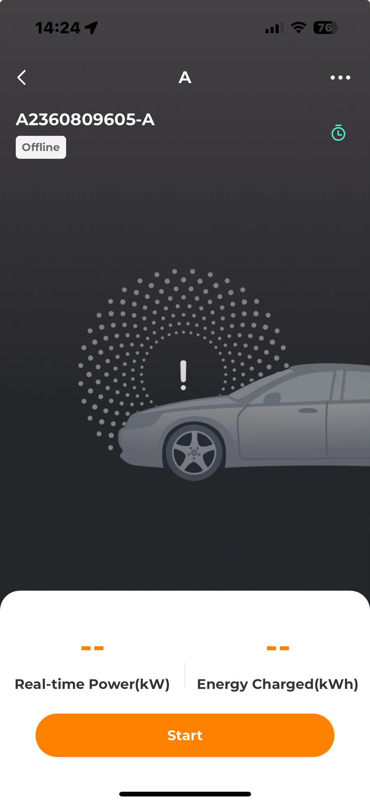
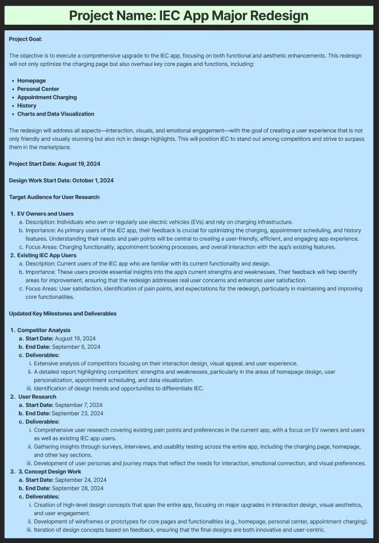
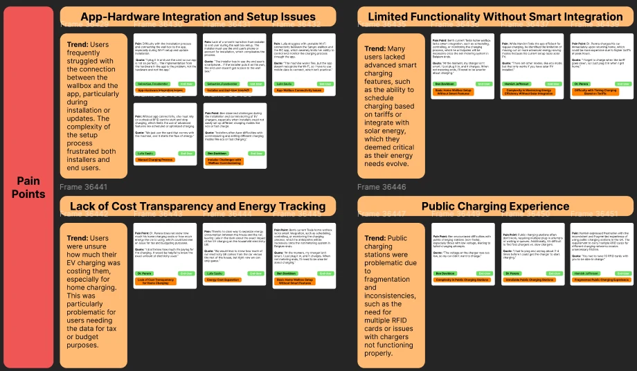
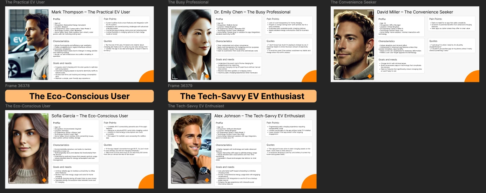

Owned the full research process
UX research · EV charging · European users
Understanding home EV charging behaviours
How six interviews with European EV owners uncovered opportunities to simplify setup, automate routine decisions and make charging costs easier to understand.


Direct researchSix EV owners across Europe
SynthesisPatterns translated into product opportunities
Project snapshot
The deliverable was knowledge—not a launched interface
Different levels of technical experience
40–60 minutes per session
Shared for future product decisions
Why the study existed
Before redesigning the app, we needed to understand the charging experience around it
The product connected EV owners with a residential wallbox, but the experience extended beyond the screen: installer handover, Wi-Fi connection, charging routines, tariffs, solar production and household energy all shaped whether the service felt useful.
Existing product context
The app was only one part of the charging experience.
Users also depended on a successful wallbox installation, stable connectivity, understandable charging states and confidence that the car would be ready when needed.
What do EV owners need from a charging app when the best experience may be not having to open it at all?

My ownership
Leading the study from questions to recommendations
Defined objectives, research questions and interview guide.
Recruited and spoke with six European EV owners.
Coded transcripts and identified recurring behaviours.
Created profiles, priorities and actionable product opportunities.
Research approach
Small sample, deep conversations
The study was qualitative and directional. Its purpose was to uncover recurring problems and develop hypotheses for future product work—not to claim statistical representation.
People charging primarily at home.
From practical users to technically confident owners.
Different household energy contexts.
Different reporting and cost needs.
Interview transcripts
→Coding
→Themes
→Needs & priorities
Research materials
How the study was planned and conducted
These artefacts show the study moving from preparation into moderated conversations with EV owners across Europe.

Four core needs
Users were asking for less effort—not simply more features
Simplification
An easier and more reliable relationship between installer, homeowner, wallbox and app.
- Guided setup
- Clear connection feedback
- Better ownership handover
Automation
Charging decisions that adapt to tariffs, solar availability and when the vehicle is needed.
- Smart scheduling
- Solar-first charging
- Departure-time goals
Transparency
A clear understanding of energy use, costs and the value of different charging choices.
- Session cost
- Historical trends
- Exportable reports
Flexibility
Automation for the routine with fast, understandable overrides when plans change.
- Smart mode
- Eco mode
- Boost mode
Original synthesis
Turning interview data into product themes
After coding the interviews, I grouped recurring observations into four pain-point clusters. This helped move from individual quotes to clearer product priorities.
- App-hardware integration and setup issues
- Limited functionality without smart integration
- Lack of cost transparency and energy tracking
- Public charging friction and inconsistency

The central tension
Automation and control were not opposites
Users did not want to manage every charging session manually. They wanted the system to make sensible routine decisions, while keeping urgent choices visible when circumstances changed.
RoutineLet the product optimiseTariff · Solar · Departure time
+
ExceptionLet the user overrideBoost · Pause · Change target
Automate the routine, but keep urgent choices visible and accessible.
Behavioural profiles
Three clearer ways to think about charging needs
The original research included five end-user personas. For this portfolio, I consolidated them into three behavioural profiles to avoid false precision from a six-person study.
The Effortless Charger
Wants setup and daily charging to work reliably without constant attention.
Reliability · Simplicity · StatusThe Cost-Conscious Planner
Wants to schedule around tariffs and understand exactly where money is being spent.
Costs · Scheduling · ReportsThe Active Optimiser
Wants deeper control over solar integration, modes and charging behaviour.
Control · Solar · Advanced settings
Prioritisation
Trust and user value before aesthetic change
The recommendations deliberately prioritised functional confidence over making the application look more modern.
Product opportunities
Turning research into directions a team could act on
Make ownership transfer explicit
Use invitation links or QR codes so installers can commission hardware without leaving the homeowner locked out.
Design around user outcomes
Ask when the car is needed and what the user values, then build the charging plan automatically.
Explain the financial value
Connect each session to energy consumed, estimated cost and savings from tariffs or solar.
Keep overrides obvious
Make immediate charging available without forcing users through advanced settings.
Outcome
A research foundation for future decisions
I delivered the research plan, interviews, coded analysis, themes, personas, prioritisation and recommendations to stakeholders.
I was not involved after delivery and cannot claim that the findings shaped implementation. The honest outcome was a structured, evidence-based view of the problems and opportunities available to the product team.
01Four recurring user needs02Behavioural charging profiles03Prioritised opportunity areas04Actionable recommendations05Questions for future validation
Reflection
The best charging experience may be one users rarely need to open
This project reminded me that engagement is not always the right success measure. For a routine home-energy task, value can come from reliability, automation and timely information rather than frequent interaction.
It also reinforced the importance of being precise about research limitations. Six interviews can expose meaningful patterns and guide exploration, but they should create hypotheses for further validation—not certainty.
Success is not more time in the app. It is a charged vehicle, a clear cost and less mental effort.